tempoPlot: Microbiome Time Series Visualization
2026-11-16
Source:vignettes/tempoPlot.Rmd
tempoPlot.RmdIntroduction
tempoPlot is a package in the mia family
for visualizing longitudinal microbiome data. It plots data and results
stored in TreeSummarizedExperiment and
MultiAssayExperiment objects, many of them computed with
miaTime
and mia. All
functions return ggplot objects.
| Question | Functions |
|---|---|
| When were samples taken? |
plotSwimmer(), plotGaps(),
plotCalendar()
|
| How does a value change over time? |
plotTrend(), plotPath()
|
| How does the composition change? |
plotComposition(), plotTiles(),
plotHorizon(), plotRanks(),
plotAlluvial(), plotTransitionMatrix()
|
| How fast and how much do communities change? |
plotTurnover(), plotTBI(),
plotRecurrence(), plotIndividuality(),
plotFingerprint(), plotLagProfile()
|
| Are there states, rhythms or leads? |
plotLandscape(), plotSpectrum(),
plotLagHeatmap(), plotSurvival()
|
| Which features or subjects stand out? |
plotVolcano(), plotFeatureScatter(),
plotStats(), plotSubjectScatter(),
plotTimeLoadings()
|
| How do ordinations and networks compare? |
plotProcrustes(), plotDirection(),
plotNetwork(), plotDOC()
|
| All of it for one subject or a cohort | plotReport() |
Installation
remotes::install_github("0xMuluh/tempoPlot")The examples use three datasets from miaTime:
hitchip1006, an adult cohort sampled up to five times over
several years; minimalgut, a defined community of 16
species in three bioreactors sampled every few hours under the same
perturbations; and SilvermanAGutData, four artificial guts
sampled daily and hourly.
data(hitchip1006)
tse <- hitchip1006
# Some profiles are stored twice; keep the first copy
tse <- tse[, !duplicated(t(assay(tse, "counts")))]
tse <- tse[, tse$subject %in% names(which(table(tse$subject) >= 3))]
tse$visit <- factor(ave(tse$time, tse$subject, FUN = rank))
data(minimalgut)
mg <- transformAssay(minimalgut, method = "relabundance")Study design
plotSwimmer() shows when each subject was sampled. In
hitchip1006, the subjects followed longest are mostly
overweight or obese, while those with short follow-up are mostly
lean.
plotSwimmer(tse, time.col = "time", group = "subject",
colour.by = "bmi_group")
events marks interventions as bands (with an
end) or markers, here the perturbation schedule shared by
the bioreactors. missing = "show" marks gaps longer than
max.gap with dashed lines.
events <- data.frame(
start = c(0, 152, 432),
end = c(24, NA, 436),
label = c("batch", "Blautia added", "double dilution rate"))
plotSwimmer(minimalgut, time.col = "Time.hr", group = "StudyIdentifier",
events = events)
plotGaps() shows the intervals between consecutive
samples of each subject, and plotCalendar() the samples per
day for Date times.
plotGaps(tse, time.col = "time", group = "subject", group.by = "sex",
layout = "box")
Trajectories
plotTrend() shows one value over time for each subject:
a colData column, such as a result from miaTime, a feature or an
ordination component. Here, the divergence of each subject from their
first sample, computed with addBaselineDivergence(), by
visit, the order of each subject’s samples.
tse <- addBaselineDivergence(tse, group = "subject", time.col = "time",
assay.type = "counts")
plotTrend(tse, y = "divergence", time.col = "visit", group = "subject",
layout = "box")
baseline expresses a value relative to each subject’s
first sample, and smooth adds a group summary.
plotTrend(tse, y = "diversity", time.col = "visit", group = "subject",
group.by = "sex", baseline = "difference", smooth = "mean")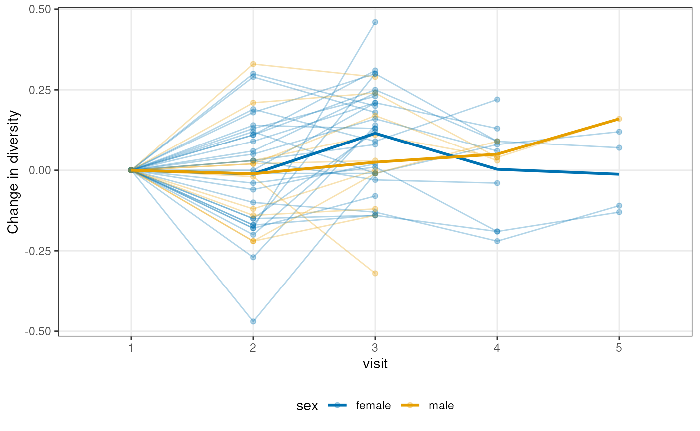
align.to draws time relative to an event of each subject
and limits a reference range. After Blautia
hydrogenotrophica was added at 152 h, acetate rose above its range
before the addition.
minimalgut$added <- 152
before <- minimalgut$Time_hr_num < 152
plotTrend(minimalgut, y = "Acetate", time.col = "Time_hr_num",
group = "StudyIdentifier", group.by = "StudyIdentifier",
align.to = "added", limits = range(minimalgut$Acetate[before]))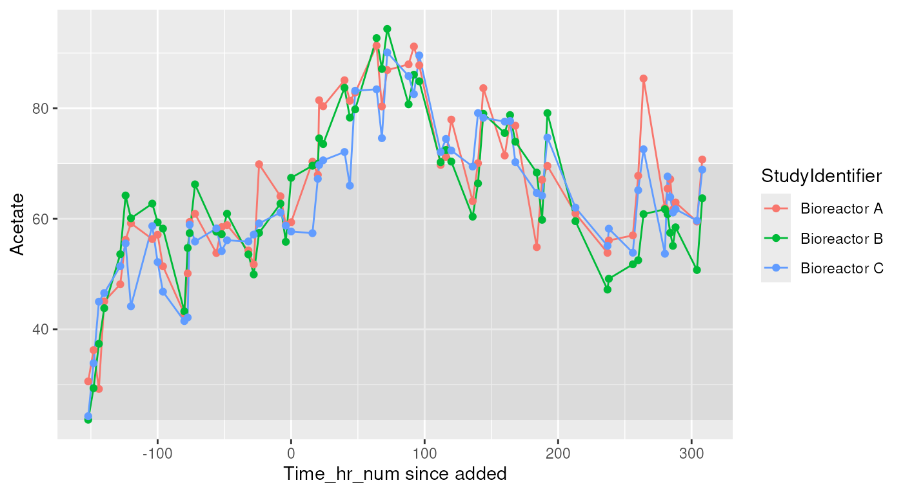
plotPath() follows subjects through an ordination or two
variables; centroids adds the mean path of each group.
tse <- transformAssay(tse, method = "relabundance")
tse <- addMDS(tse, assay.type = "relabundance", method = "bray",
name = "PCoA")
five <- tse[, tse$subject %in% names(which(table(tse$subject) == 5))]
plotPath(five, time.col = "visit", group = "subject", dimred = "PCoA",
group.by = "sex", centroids = TRUE)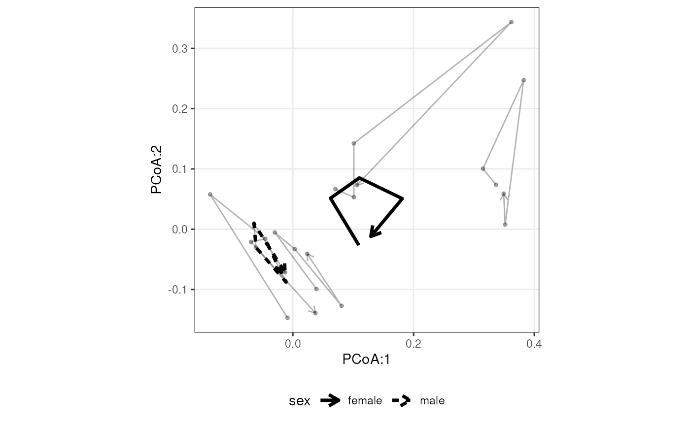
Composition over time
plotComposition() stacks the most abundant features over
time, as bars, areas or a stream; as.relative = FALSE
stacks absolute values such as relative abundance times biomass.
plotComposition(minimalgut, time.col = "Time_hr_num",
group = "StudyIdentifier", top = 8, layout = "area")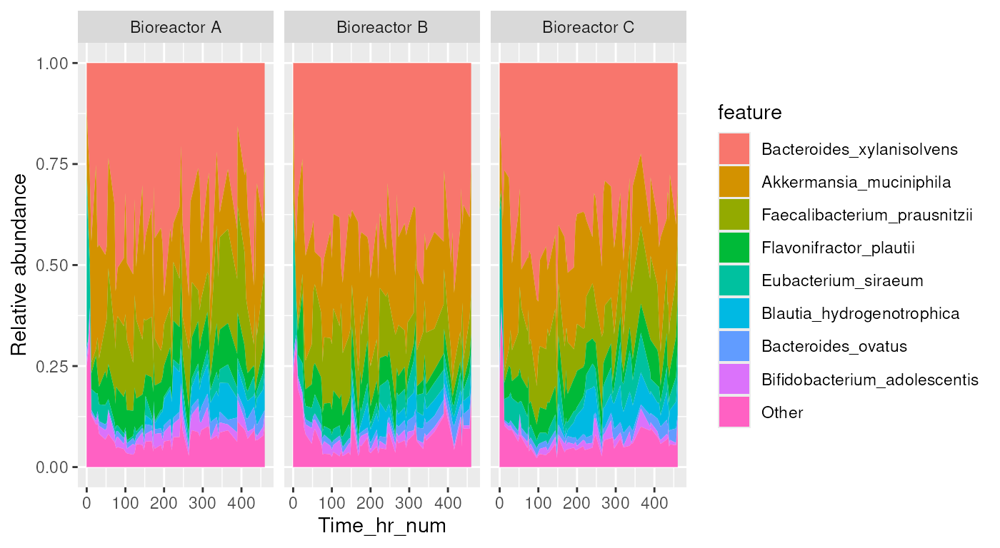
plotTiles() draws features by time as a heatmap of
values, changes, presence, or effects from a results table.
plotHorizon() folds each feature into a short strip, and
plotRanks() follows the rank of each feature.
plotTiles(mg, time.col = "Time.hr", group = "StudyIdentifier",
assay.type = "relabundance", value = "change", order.by = "cluster",
level = "group")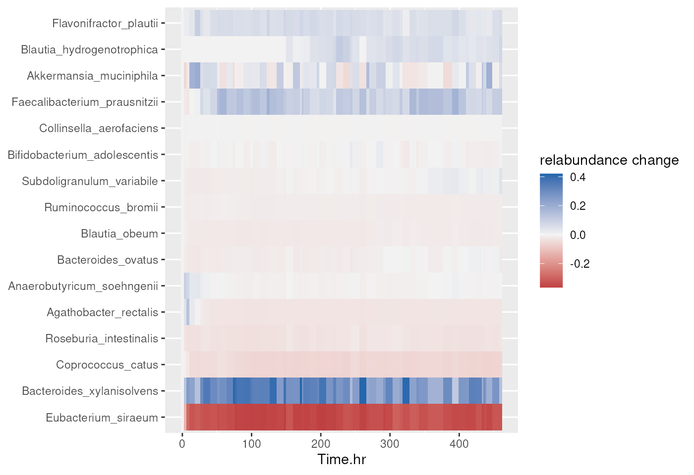
plotHorizon(mg, time.col = "Time.hr", group = "StudyIdentifier",
assay.type = "relabundance", top = 8)
States such as the dominant genus are drawn as flows between visits
by plotAlluvial() and as transition shares by
plotTransitionMatrix().
h <- addDominant(hitchip1006, name = "dominant", n = 4)
plotTransitionMatrix(h, state.col = "dominant", time.col = "time",
group = "subject")
Change and stability
plotTurnover() counts the features gained and lost
between consecutive samples; plotTBI() splits the change
between two time points into losses and gains (Legendre 2019).
plotTBI(tse, time.col = "visit", group = "subject", t1 = "1", t2 = "2",
colour.by = "sex")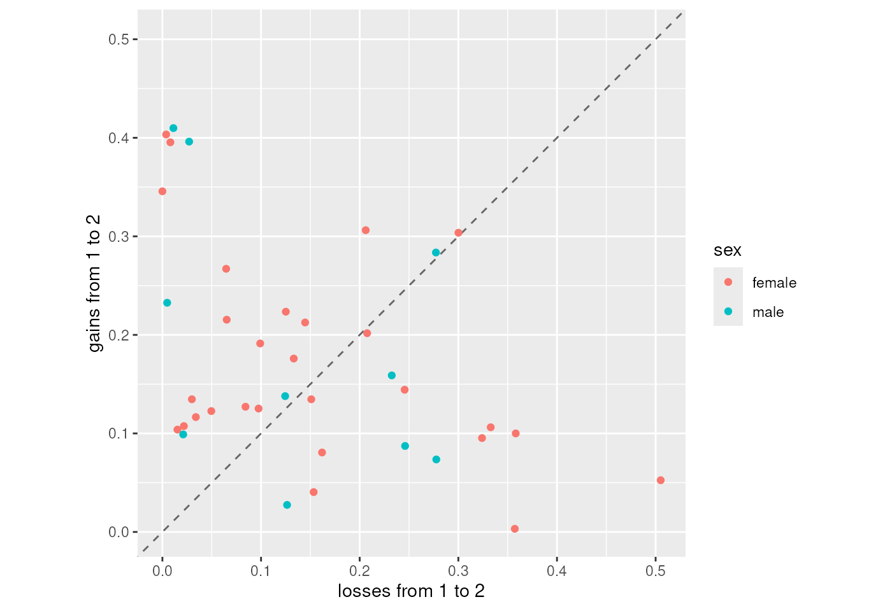
From a dissimilarity stored by addDissimilarity(),
plotRecurrence() draws the dissimilarities between the
samples of each subject over time, plotIndividuality()
compares them with those between subjects, and
plotFingerprint() asks whether each subject’s later sample
is closest to its own earlier one.
mg <- addDissimilarity(mg, method = "bray", assay.type = "counts")
plotRecurrence(mg, dissimilarity = "bray", time.col = "Time.hr",
group = "StudyIdentifier")
tse <- addDissimilarity(tse, method = "bray", assay.type = "counts")
plotIndividuality(tse, dissimilarity = "bray", group = "subject")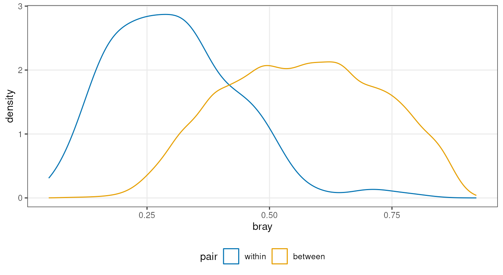
plotLagProfile() draws the variogram of
addVariogram(): how far apart samples of a subject are, by
the time between them.
States, rhythms and leads
plotLandscape() draws the density of a variable or its
potential; the abundance of Prevotella at the first sample of each
subject has two wells, a low and a high state (Lahti et al. 2014).
first <- hitchip1006[, hitchip1006$time == 0]
first <- transformAssay(first, method = "relabundance")
first <- transformAssay(first, assay.type = "relabundance",
method = "log10", pseudocount = 1e-4, name = "log10")
plotLandscape(first, y = "Prevotella melaninogenica et rel.",
assay.type = "log10", scale = "potential")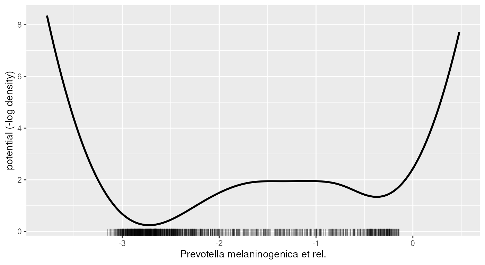
plotSpectrum() finds periodic changes. Acetate in the
bioreactors, which were fasted once a day, has peaks near one cycle per
24 h.
plotSpectrum(minimalgut, y = "Acetate", time.col = "Time_hr_num",
group = "StudyIdentifier")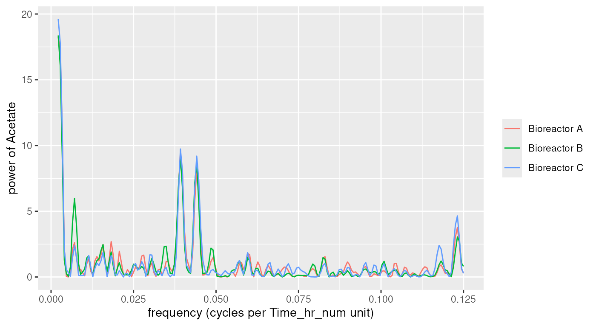
plotLagHeatmap() correlates features with a target at
lags of a few samples, and plotSurvival() draws the time
until an event, such as leaving the first state.
clr <- transformAssay(minimalgut, method = "clr", pseudocount = 1)
plotLagHeatmap(clr, target = "Acetate", time.col = "Time.hr",
group = "StudyIdentifier", assay.type = "clr")
Features and subjects
plotFeatureScatter() draws two statistics per feature
with a fit, such as Taylor’s law of mean and variance.
plotFeatureScatter(first, x.stat = "mean", y.stat = "variance",
fit = "power")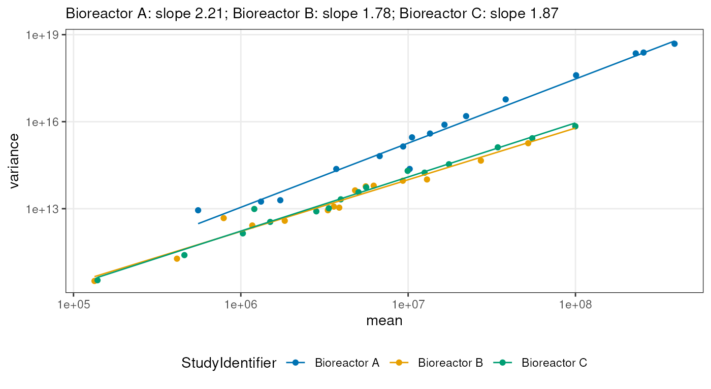
plotVolcano() and plotStats() draw results
per feature; plotSubjectScatter() draws two statistics per
subject, or the subject loadings of a tensor decomposition, and
plotTimeLoadings() its time loadings. Here the TEMPTED
decomposition of the bioreactors (Shi et al. 2024), if the tempted
package is installed.
counts <- t(assay(minimalgut, "counts"))
metadata(minimalgut)$tempted <- tempted::tempted_all(counts,
timepoint = minimalgut$Time_hr_num,
subjectID = as.character(minimalgut$StudyIdentifier), r = 2,
threshold = 1, pseudo = 0.5, do_ratio = FALSE)
plotTimeLoadings(minimalgut, source = "tempted")
Ordinations and networks
plotProcrustes() superimposes two ordinations of the
same samples, plotDirection() draws the directions in which
subjects move in one, plotNetwork() draws feature or sample
networks, and plotDOC() the dissimilarity-overlap
curve.
mg <- addMDS(mg, assay.type = "relabundance", method = "bray",
name = "PCoA")
plotDirection(mg, time.col = "Time.hr", group = "StudyIdentifier",
dimred = "PCoA", group.by = "StudyIdentifier")
Reports
plotReport() stacks panels for one subject, a cohort or
an intervention.
plotReport(minimalgut, time.col = "Time_hr_num",
group = "StudyIdentifier", y = c("Acetate", "Butyrate"),
subject = "Bioreactor A", top = 8)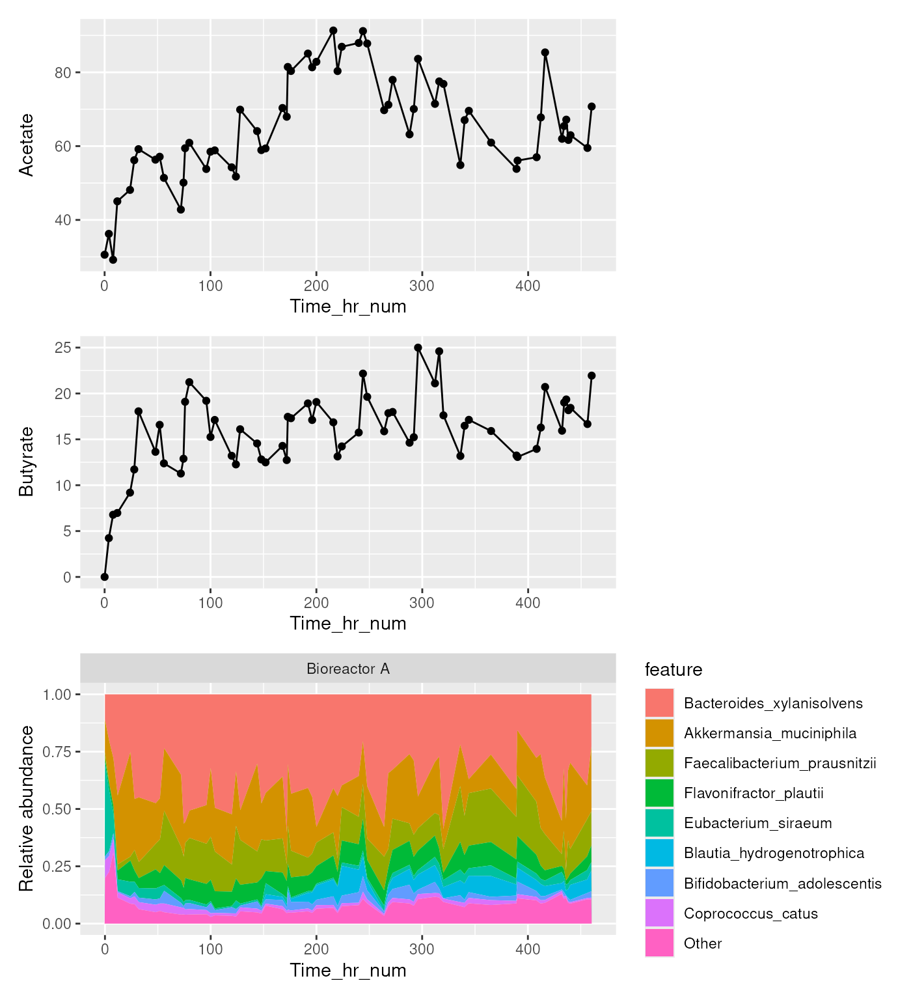
References
Lahti L, et al. (2014). Tipping elements in the human intestinal ecosystem. Nature Communications 5:4344.
Legendre P (2019). A temporal beta-diversity index to identify sites that have changed in exceptional ways in space-time surveys. Ecology and Evolution 9(6):3500-3514.
Shi P, et al. (2024). TEMPTED: time-informed dimensionality reduction for longitudinal microbiome studies. Genome Biology 25:317.
Session info
Show session info
sessionInfo()
#> R version 4.6.1 (2026-06-24)
#> Platform: x86_64-pc-linux-gnu
#> Running under: Ubuntu 24.04.5 LTS
#>
#> Matrix products: default
#> BLAS: /usr/lib/x86_64-linux-gnu/openblas-pthread/libblas.so.3
#> LAPACK: /usr/lib/x86_64-linux-gnu/openblas-pthread/libopenblasp-r0.3.26.so; LAPACK version 3.12.0
#>
#> locale:
#> [1] LC_CTYPE=en_US.UTF-8 LC_NUMERIC=C
#> [3] LC_TIME=en_US.UTF-8 LC_COLLATE=en_US.UTF-8
#> [5] LC_MONETARY=en_US.UTF-8 LC_MESSAGES=en_US.UTF-8
#> [7] LC_PAPER=en_US.UTF-8 LC_NAME=C
#> [9] LC_ADDRESS=C LC_TELEPHONE=C
#> [11] LC_MEASUREMENT=en_US.UTF-8 LC_IDENTIFICATION=C
#>
#> time zone: UTC
#> tzcode source: system (glibc)
#>
#> attached base packages:
#> [1] stats4 stats graphics grDevices utils datasets methods
#> [8] base
#>
#> other attached packages:
#> [1] miaTime_1.3.6 mia_1.21.30
#> [3] TreeSummarizedExperiment_2.21.0 Biostrings_2.81.9
#> [5] XVector_0.53.0 SingleCellExperiment_1.35.2
#> [7] MultiAssayExperiment_1.39.1 SummarizedExperiment_1.43.0
#> [9] Biobase_2.73.2 GenomicRanges_1.65.4
#> [11] Seqinfo_1.3.2 IRanges_2.47.5
#> [13] S4Vectors_0.51.10 BiocGenerics_0.59.13
#> [15] generics_0.1.4 MatrixGenerics_1.25.0
#> [17] matrixStats_1.5.0 tempoPlot_0.99.49
#> [19] knitr_1.52 BiocStyle_2.41.0
#>
#> loaded via a namespace (and not attached):
#> [1] RColorBrewer_1.1-3 shape_1.4.6.1
#> [3] jsonlite_2.0.0 magrittr_2.0.5
#> [5] ggbeeswarm_0.7.3 farver_2.1.2
#> [7] rmarkdown_2.32 fs_2.1.0
#> [9] ragg_1.5.2 vctrs_0.7.3
#> [11] DelayedMatrixStats_1.35.0 htmltools_0.5.9
#> [13] S4Arrays_1.13.2 BiocNeighbors_2.7.3
#> [15] SparseArray_1.13.5 sass_0.4.10
#> [17] bslib_0.12.0 htmlwidgets_1.6.4
#> [19] desc_1.4.3 plyr_1.8.9
#> [21] DECIPHER_3.9.3 cachem_1.1.0
#> [23] igraph_2.3.4 lifecycle_1.0.5
#> [25] iterators_1.0.14 pkgconfig_2.0.3
#> [27] rsvd_1.0.6 Matrix_1.7-6
#> [29] R6_2.6.1 fastmap_1.2.0
#> [31] digest_0.6.39 tempted_0.1.2
#> [33] patchwork_1.3.2 scater_1.41.3
#> [35] irlba_2.4.1 textshaping_1.0.5
#> [37] vegan_2.7-6 beachmat_2.29.3
#> [39] labeling_0.4.3 abind_1.4-8
#> [41] mgcv_1.9-4 compiler_4.6.1
#> [43] withr_3.0.3 S7_0.2.2
#> [45] BiocParallel_1.47.0 viridis_0.6.5
#> [47] DBI_1.3.0 MASS_7.3-66
#> [49] quantreg_6.1 rappdirs_0.3.4
#> [51] DelayedArray_0.39.8 bluster_1.23.1
#> [53] permute_0.9-10 tools_4.6.1
#> [55] vipor_0.4.7 otel_0.2.0
#> [57] beeswarm_0.4.0 ape_5.8-1
#> [59] glue_1.8.1 quadprog_1.5-8
#> [61] nlme_3.1-171 grid_4.6.1
#> [63] cluster_2.1.8.3 reshape2_1.4.5
#> [65] gtable_0.3.6 tidyr_1.3.2
#> [67] BiocSingular_1.29.2 ScaledMatrix_1.21.0
#> [69] ggrepel_0.9.8 foreach_1.5.2
#> [71] pillar_1.11.1 stringr_1.6.0
#> [73] yulab.utils_0.2.5 splines_4.6.1
#> [75] dplyr_1.2.1 treeio_1.37.1
#> [77] lattice_0.23-1 survival_3.8-12
#> [79] SparseM_1.84-2 tidyselect_1.2.1
#> [81] DirichletMultinomial_1.55.1 scuttle_1.23.2
#> [83] gridExtra_2.3.1 bookdown_0.48
#> [85] xfun_0.62 stringi_1.8.9
#> [87] lazyeval_0.2.3 yaml_2.3.12
#> [89] boot_1.3-32 evaluate_1.0.5
#> [91] codetools_0.2-20 tibble_3.3.1
#> [93] BiocManager_1.30.27 cli_3.6.6
#> [95] systemfonts_1.3.2 jquerylib_0.1.4
#> [97] Rcpp_1.1.2 parallel_4.6.1
#> [99] MatrixModels_0.5-4 pkgdown_2.2.1
#> [101] ggplot2_4.0.3 sparseMatrixStats_1.25.0
#> [103] glmnet_5.1 decontam_1.33.0
#> [105] viridisLite_0.4.3 tidytree_0.4.8
#> [107] scales_1.4.0 np_0.80-1
#> [109] purrr_1.2.2 crayon_1.5.3
#> [111] rlang_1.3.0